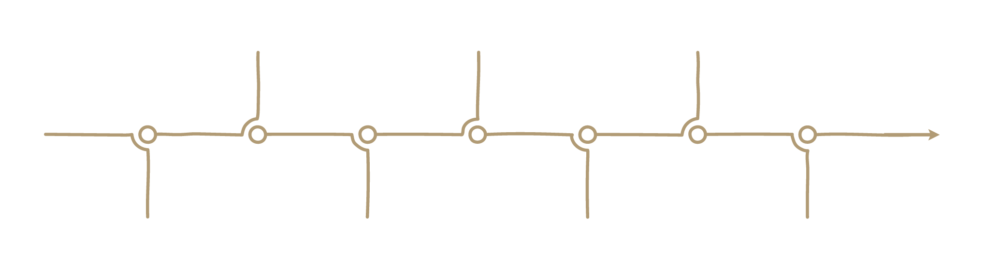

Historia
Słowo „organy” pochodzi z języka greckiego i łacińskiego i oznacza „narzędzie” – w tym przypadku narzędzie do tworzenia niezwykłej muzyki. Początkowo organy wykorzystywano tylko w muzyce świeckiej, a ich obecność w kościołach budziła kontrowersje. Dopiero w VII wieku papież Witalian zezwolił na ich użycie podczas liturgii. Od tego czasu stały się ważnym elementem muzyki kościelnej i symbolem wspólnoty – każdy głos w organach jest ważny, tak jak każdy głos w społeczności wiernych.
